Introduction
HiveMQ is a MQTT broker tailored specifically for enterprises which find themself in the emerging age of Machine-to-Machine communication (M2M) and the Internet of Things. It was built from the ground up with maximum scalability and enterprise-ready security concepts in mind. HiveMQ implements the Message Queue Telemetry Transport protocol, the de-facto M2M messaging standard, and through its 100% compliance to the specification, it is leading when it comes to professional adoption of all possibilities of the Internet of Things for companies.
Pre Installation Requirements
-
At least 128MB of RAM. 512MB or more is recommended
-
20MB of free disk space for HiveMQ itself. At least 50MB for persistence features are recommended.
-
Windows, Mac OS X or Linux. It is recommended to use a Linux distribution for production use.
-
OpenJDK 1.7 or newer must be installed.
Installation
This guide explains the default installation, if you want to try and review HiveMQ you can follow the getting started guide instead: http://www.hivemq.com/documentations/getting-started/
General installation information
HiveMQ comes as a zip file which contains the executables, init scripts and sample configurations.
The zip contains the following directories:
| Folder name | Description |
|---|---|
|
The folder with start scripts and binary files |
|
The folder with the configurations |
|
Persistent client data and cluster data are located here. |
|
The folder where plugins reside |
|
The folder where the hivemq.lic license file resides. |
|
All log files can be found here |
Installation for specific Operating Systems
This procedure shows how to install the most recent HiveMQ version. To install older HiveMQ versions please visit http://www.hivemq.com/downloads/
Installation instructions for Unix based systems (Linux,BSD,MacOS X,Unix)
The default installation directory is /opt/hivemq and the default user to run HiveMQ is named hivemq. If you need to install HiveMQ to a custom directory or run it under a custom user please be aware of changing the $HIVEMQ_DIRECTORY and/or the HIVEMQ_USER in the $HIVEMQ_DIRECTORY/bin/start.sh script.
-
Login as root
Some of the following commands need root privileges, please login as root or use sudo to execute the commands.
-
Change directory to where you want to download and install HiveMQ. By default we prefer
/optcd /opt -
Download latest HiveMQ version from the website
wget --content-disposition http://www.hivemq.com/downloads/releases/latestor
curl -O -L http://www.hivemq.com/downloads/releases/latest -
Extract the files
unzip hivemq-<version>.zip -
Create hivemq symlink
ln -s /opt/hivemq-<version> /opt/hivemq -
Create HiveMQ user
useradd -d /opt/hivemq hivemq -
Make scripts executeable and change owner to hivemq user
chown -R hivemq:hivemq /opt/hivemq-<version> chown -R hivemq:hivemq /opt/hivemq cd /opt/hivemq chmod +x ./bin/run.sh -
Adjust the configuration properties to your needs.
See chapter Configuration for detailed instructions how to configure HiveMQ.
If you just want to try HiveMQ you can skip this part now and proceed with Starting HiveMQ.
-
Install the init script (optional)
For Debian-based linux like Debian, Ubuntu, Raspbian
cp /opt/hivemq/bin/init-script/hivemq-debian /etc/init.d/hivemq chmod +x /etc/init.d/hivemqFor all other unix systems
cp /opt/hivemq/bin/init-script/hivemq /etc/init.d/hivemq chmod +x /etc/init.d/hivemq -
Modify /etc/init.d/hivemq (optional)
Set the
HIVEMQ_HOMEand theHIVEMQ_USERvariable to the correct vaules for your system.By default this would be:
HIVEMQ_HOME=/opt/hivemqHIVEMQ_USER=hivemqIf you installed HiveMQ to a different directory than
/opt/hivemqplease point theHIVEMQ_HOMEin your init script to the correct directory. Otherwise the daemon will not start correctly. -
Start HiveMQ on boot (optional)
For Debian-based linux like Debian, Ubuntu, Raspbian
update-rc.d hivemq defaultsDebian > 6.0
insserv hivemqCentOS or RHEL
chkconfig hivemq on
Installation instructions for Windows based systems
-
Download latest HiveMQ version from here: http://www.hivemq.com/downloads/releases/latest
-
Extract the file
hivemq.ziptoC:\hivemqusing your favorite Zip util.
Installation as Windows Service
In order to install HiveMQ as a Windows service conveniently, please download the Windows Service Installer here: http://hivemq.com/additional-software/hivemq-windows-service.zip
The steps to install HiveMQ as a Windows Service are:
-
Download the
hivemq-windows-service.zipfile here: http://hivemq.com/additional-software/hivemq-windows-service.zip -
Unzip the
hivemq-windows-service.zipfile. -
Copy the
windows-servicefolder to your HiveMQ home folder. -
Open the
windows-servicefolder. -
Double click the
installService.batfile.
Make sure you have the permission to install a service.
Therefore it might be necessary to right click the installService.bat and select Run as administrator.
|
Starting HiveMQ
The following instructions show how to start HiveMQ
Starting HiveMQ on Unix based systems (Linux,BSD,Mac OS X,Unix)
-
Change directory to HiveMQ directory
cd /opt/hivemq -
Execute startup script
./bin/run.sh -
(optional) Start daemon
/etc/init.d/hivemq start
Starting HiveMQ on Windows based systems
Double click on the run.bat file.
Testing the installation
The following instructions show how to verify that HiveMQ is up and running
Verifying HiveMQ is running on a Unix based systems (Linux,BSD,Mac OS X,Unix)
-
Check if HiveMQ is listening to the default port for MQTT
netstat -an|grep 1883
Verifying HiveMQ is running on a Windows based systems
-
Check if HiveMQ is listening to the default port for MQTT. Open
cmd.exeand run:netstat -an|find "1883"
Using ports between 1 and 1024 on Linux machines
HiveMQ uses port 1883 (for standard MQTT) and 8883 (for MQTT + TLS) by default. Sometimes it may be desirable to use ports between 0 and 1024, which are reserved for root users.
A common solution for running HiveMQ on ports below port 1024 is using authbind.
Installing authbind
sudo apt-get install authbind# Unfortunately authbind is not available in the standard RHEL repositories, so we have to install it manually
yum install -y gcc-c++
wget http://ftp.debian.org/debian/pool/main/a/authbind/authbind_2.1.1.tar.gz -O authbind.tar.gz
tar zxf authbind.tar.gz
cd authbind-2.1.1
make
make installConfiguring authbind
In this example we’re assuming we want to give HiveMQ the privilege to run on port 80.
touch /etc/authbind/byport/80
chmod 500 /etc/authbind/byport/80
chown hivemq:hivemq /etc/authbind/byport/80Modifying the init script
Now we have to modify the init script to use authbind.
sed -i 's|su $HIVEMQ_USER -c "$HIVEMQ_HOME/bin/run.sh >/dev/null 2>\&1 \&"|su $HIVEMQ_USER -c "exec /usr/local/bin/authbind --deep $HIVEMQ_HOME/bin/run.sh >/dev/null 2>\&1 \&"|g' /etc/init.d/hivemqsed -i 's|su $HIVEMQ_USER -c "$HIVEMQ_HOME/bin/run.sh >/dev/null 2>\&1 \&"|su $HIVEMQ_USER -c "exec /usr/bin/authbind --deep $HIVEMQ_HOME/bin/run.sh >/dev/null 2>\&1 \&"|g' /etc/init.d/hivemqTroubleshooting
Port is already in use
If you are seeing a message like the one below in your logs before HiveMQ shutdown, there is probably already an application running on the port HiveMQ wants to use.
2014-09-04 22:51:53,468 ERROR - Could not bind to all interfaces and port 1883, because it is already in use. Stopping HiveMQ.
To find out which application is running on this port, use the following command:
lsof -iTCP:1883To solve the issue, you have basically two options:
-
Exit the application already using that port.
-
Start HiveMQ on another port. You can learn more about starting HiveMQ on another port in the Configuration Chapter.
Configuration
Configuration Files
HiveMQ is configured with sensible default settings. Therefore most users will find it sufficient to use the default values to get started.
All configuration files are located in the conf folder of the HiveMQ directory. In the following the different configuration files are explained:
| Property file name | Purpose |
|---|---|
configuration.properties |
Static broker configuration properties which are needed for HiveMQ to start. |
application.properties |
Dynamic application specific properties which can be edited at runtime. |
cluster-*.xml |
Configurations for the cluster transport and protocol communication (only needed for clustering). If cluster is enabled, HiveMQ expects 5 of these files ( |
bridges.xml |
Configurations for MQTT broker bridges (only needed for bridges) |
If you want all properties to be static, it is possible to copy all settings from the application.properties file to the configuration.properties file.
HiveMQ will pick these values up at startup time and these values cannot be modified at runtime anymore.
|
Configuration files
The configuration.properties file is read only once during the HiveMQ startup and you have to restart HiveMQ before any changes made during runtime are coming into effect.
The properties in the application.properties are updated automatically every minute.
|
Configuration Options
The following tables list the available configuration options for HiveMQ. When a property is not defined in one of the configuration files the default value will be used.
application.properties
The properties defined here can be changed at runtime. HiveMQ reloads this configuration file once a minute.
| Property Name | Default Value | Description |
|---|---|---|
|
false |
Enable to monitor the performance of plugins. When enabled this will result in a significant performance loss. |
|
0 |
Maximum kb/s for outgoing traffic. Use 0 if you don’t want to throttle outgoing traffic |
|
-1 |
Maximum allowed concurrent connections. Use -1 for unlimited connections |
|
268435456 |
Maximum message size. The MQTT default for a message is 256MB. If clients must publish messages which are smaller, a saner message size limit should be configured. |
|
0 |
Maximum kb/s for ingoing traffic. Use 0 if you don’t want to throttle ingoing traffic |
configuration.properties
The properties defined here are applied once during the startup of HiveMQ and cannot be changed at runtime.
| Property Name | Default Value | Description |
|---|---|---|
|
0.0.0.0 |
The IP address on which HiveMQ will be bound to |
|
1883 |
The port on which HiveMQ will listen |
|
10 |
Time in seconds to wait before resending an outgoing QoS=1 or QoS=2 message |
|
65535 |
The maximum length of client ID. The MQTT v3.1 spec defines a limit of 23. Since there is no real reason for that artificial limit, HiveMQ sets the default limit to 65535 |
|
true |
If enabled, HiveMQ checks if a new HiveMQ version is available once a day |
|
false |
Enable the monitoring with Graphite |
|
10 |
The interval for publishing metrics to Graphite in seconds. Too low intervals could results in possible performance losses. |
|
localhost:2003 |
The Graphite URL. Must be in the format "hostname:port" |
|
A prefix for every metric which is sent to the Graphite instance. Useful for distinguishing between different HiveMQ servers or when using a hosted Graphite service to prefix the API Key |
|
|
The location of the servers key store. It is expected relatively to the HiveMQ home folder or as absolute path. |
|
|
The password for the keystore of the server. Defaults to no password |
|
|
false |
Enables the resource consumption logging |
|
60 |
Time in seconds between logging of the resource consumption |
|
20 |
The maximum number of QoS 1 or 2 messages that can be in the process of being transmitted simultaneously. This includes messages currently going through handshakes and messages that are being retried. Set to 0 for no maximum. If set to 1, this will guarantee in-order delivery of messages for QoS1 und QoS2. |
|
1000 |
The maximum number of queued (QoS 1 + 2) messages per client. When messages can’t be processed because the maximum numbers of in-flight messages are processed right now, the messages will be queued for later processing. If the number of maxQueued messages is reached, all new incoming messages to deliver will be discarded for the client. Set to 0 if you don’t want messages to get discarded. |
|
false |
If this feature is enabled, HiveMQ will send Last-Will-And-Testament messages on all client disconnects, even graceful disconnects with a prior DISCONNECT message. This is a non-standard MQTT behaviour, only enable it if you really want this behaviour. |
|
false |
Low level callbacks are callbacks which include all existing MQTT command messages, like PubRec, PubRel, etc. If your plugin needs to react to each individual MQTT command message, set this to true and all callbacks are available. In most cases the low level callbacks are not needed, only activate them if you really use them, otherwise this is influencing the performance. |
|
false |
Enables or disables SSL client certificate authentication on the application layer. This does NOT affect transport client authentication. Essentially this enables HiveMQ plugins to provide permissions for users with specific client certificates. |
|
none |
Sets the client authentication mode. Allowed values are: none, optional and required |
|
false |
Enables or disables SSL support |
|
0 |
The timeout for a SSL handshake. All clients which need longer for a handshake than the specified timeout will be disconnected. If not specified, no timeout is set. |
|
false |
If the hybrid mode is enabled and SSL is activated, SSL and standard TCP connections are supported simultaneously |
|
0.0.0.0 |
The IP address MQTT over TLS/SSL will be bound to. |
|
8883 |
The port where HiveMQ will expect SSL encrypted connections |
|
TLS |
The cryptographic protocol which should be used for the secure communication between HiveMQ and its clients. Defaults to TLS. |
|
60 |
Interval in seconds for the statistics callback. Used for the callback of plugins which are interested in HiveMQ statistics. |
|
true |
If statistics are enabled or not. If you disable statistics, the $SYS topic is also disabled. |
|
30 |
Interval in seconds for updating statistics internally. Too low intervals could result in performance loss. It is recommended, that the statistics_update_interval is smaller than the sys_interval and the statistics_callback_interval |
|
true |
If the $SYS tree should be available or not. Use true if you want to enable statistics |
|
60 |
Time in seconds between publishes of the $SYS tree |
|
The location of the trust store. It is expected relatively to the HiveMQ home folder or as absolute path. |
|
|
The password for the truststore. Defaults to no password. |
|
|
false |
This property enables websocket support for HiveMQ when set to true |
|
0.0.0.0 |
The IP address MQTT over websockets will be bound to |
|
8000 |
The port used for websockets. Defaults to 8000. |
|
mqttv3.1 |
The subprotocol used for websockets. When using Paho.js this should be mqttv3.1 |
|
/mqtt |
The path of the websocket |
|
false |
Defines if websocket extensions are allowed. |
|
65536 |
The maximum content length of a chunked HTTP request |
|
false |
When set to true, enables secure websockets for HiveMQ |
|
0.0.0.0 |
The IP address on which secure websockets will be bound to |
|
8001 |
The port for the secure websockets. |
Binding HiveMQ to different interfaces
HiveMQ can be bound to different network interfaces. You can for example bind MQTT over standard TCP to one interface and MQTT over TLS to another interface. The relevant properties for that feature are listed in the following table.
| Property Name | Description |
|---|---|
|
The IP address on which HiveMQ will be bound |
|
The IP address MQTT over TLS/SSL will be bound to |
|
The IP address MQTT over websockets will be bound to |
|
The IP address on which secure websockets will be bound to |
Security
From the ground up, HiveMQ was designed with maximum security in mind. It is mission critical for many M2M scenarios to enable secure, encrypted end-to-end communication and advanced authentication and authorization features. HiveMQ gives you the flexibility to enable specific security features for your concrete use. The following shows how to enable and configure these security features.
SSL/TLS
Transport Layer Security (TLS) is a cryptographic protocol which allows a secure and encrypted communication at transport layer between a client application and a server. If TLS is enabled in HiveMQ, every client connection is encrypted and secured by TLS. It is also possible to use X.509 certificate client authentication, please see the chapter X.509 Certificate Authentication for more details.
|
Hybrid Mode
You can configure HiveMQ to use a hybrid mode which means that HiveMQ can handle encrypted and unencrypted connections simultaneously. See the Hybrid Mode chapter for more details.
|
For usage scenarios where sensitive information is published via MQTT it is strongly recommended to enable TLS. When configured correctly it is very very hard [1] for an attacker to break the encryption and read the packets on the wire. Since TLS is a proofen technology and the whole transport is encrypted, TLS could be a better choice than a hand-rolled payload encryption when security is more important for your scenario than package overhead. See the Infobox for more details.
As in most cases, added security comes with some disadvantages. The most important disadvantage is, that SSL/TLS comes with a signifcant increase in used bandwidth. While we are talking of tens of bytes here, it can make a huge difference in scenarios where small bandwidth usage is key. Please note that the SSL handshake (which takes place when a connection is established) comes with an additonal overhead in terms of bandwidth and CPU. This is very important to consider when you have to deal with many unreliable connections which could easily drop.
Configuration
To enable SSL/TLS, the following properties have to be modified in the configuration.properties file. Please see the Configuration chapter for more details.
| Property | Description |
|---|---|
|
You have to set this property to true to enable SSL |
|
The port where SSL connections are received. Defaults to 8883 |
|
The timeout in seconds for a SSL handshake. All clients which need longer for a SSL handshake than the specified timeout will be disconnected. Set to 0 if you do not want to set a timeout |
|
The cryptographic protocol which should be used for the secure communication between HiveMQ and its clients. Defaults to TLS. |
|
The location of the Java Key Store. It is expected relatively to the HiveMQ home folder or as absolute path. |
|
The password for the Java Key Store. Leave empty if no password is set. |
|
The location of the Java Trust Store. It is expected relatively to the HiveMQ home folder or as absolute path. |
|
The password for the truststore. Leave empty if no password is set. |
At the moment only Keystores in the JKS format can be used. Also make sure that the password of your keypair is the same as the password of the keystore.
Communication Protocol
If no explicit SSL/TLS version was set via ssl.protocol, TLS (which is the same as TLSv1) is used to secure the communication between HiveMQ and the clients. If possible, it is recommended to use TLSv1.1 or TLSv1.2, as these protocols tend to be more secure.
|
TLS on different Java versions
At the time of writing, Java 6 does not support TLSv1.1 and TLSv1.2. To enable these protocols, you should use at least use a current version of Java 7.
|
If you are not sure how to create a Keystore, you can find some useful information in the Appendix of this document.
Hybrid Mode
HiveMQ can be configured to run in Hybrid Mode. That means that HiveMQ is able to handle standard TCP connections on one port and SSL/TLS connections on another port. This is completely transparent and all clients can communicate among themselves via Publish/Subscribe regardless how they are connected to the broker. Clients can decide if they want to use SSL/TLS or a "standard" TCP, non SSL connection. This is extremely useful when some clients only have a unreliable network connectivity and/or very limited available bandwidth where every additional byte overhead matters and bandwidth efficiency is more important than a secure connection. In this case, these clients can connect to HiveMQ via the unsecured port while other clients can use a secure connection via the SSL enabled port.
| Property Name | Description |
|---|---|
|
You have to set this property to true to enable SSL |
|
If the hybrid mode is enabled and SSL is activated, SSL and standard TCP connections are supported simultaneously |
A prerequisite for enabling the hybrid mode is that SSL is enabled. Set the property ssl.enabled in the configuration.properties file to true. To enable the hybrid mode, also set the property ssl.hybridMode to true.
|
Enable SSL to enable the hybrid mode
Do not forget to enable SSL, otherwise the property ssl.hybridMode will have no effect.
|
Of course it is also possible to allow different kinds of Authentication in such scenarios where hybrid mode is used. It is possible to allow X.509 Client Certificate Authentication for SSL secured connections to authenticate and authorize clients and Username/Password Authentication for connections which are not secured by SSL.
Since HiveMQs hybrid mode is very powerful, it is possible to implement a scenario where SSL clients gain more permissions than non-SSL clients. So standard TCP connections could be implemented as anonymous clients while SSL clients could be implemented as authenticated clients. This comes in very handy when you are for instance providing MQTT services to other customers and you have to differentiate between different kind of clients.
The standard TCP connection port and the SSL port must be different ports. It is important to understand that it is not possible to connect to the standard TCP port with an SSL enabled client and it is not allowed to connect to the SSL port with clients who do not initiate a SSL handshake (= non-SSL clients).
Secure Websockets
HiveMQ has native support for secure websockets. Secure Websockets use the same keystore for the TLS encryption as standard MQTT over SSL. After making sure the keystore location and password are correct and secure websockets are enabled, you can transparently use MQTT over secure websockets in web applications.
Authentication, Authorization & Permissions
HiveMQ offers several ways to implement authentication and authorization for your concrete use case. HiveMQ allows everything for every client by default. That means, if you don’t need any authentication or authorization for your scenario, you can skip this chapter. Even when you provide an username and password in the MQTT CONNECT message, HiveMQ ignores it and gives a client, which provides credentials the same permissions as a client, which do not provide any credentials.
You can use HiveMQs powerful plugin system to add authentication and authorization behaviour.
It is important to understand that there are two levels of authentication which can occur. The first type is the authentication with X.509 client certificates on the transport layer. The second type is Username/Password authentication. This takes place when a MQTT CONNECT message is sent by the client and recognized on the application layer.
All authorization and permission logic has to be added to HiveMQ by plugins. For typical use cases, many plugins already exist, so it is sufficient in most cases to select your authorization plugin of choice and plug it into HiveMQ. A list of plugins can be found here.
Since X.509 client certificate authentication happens when the SSL Handshake occurs, there is no application context because this happens on the transport. Classically no application authorization logic can be performed at this stage, because this happens on the transport layer. Fortunately HiveMQ offers authorization based on SSL certificates via its powerful plugin system. This enables you to authenticate and authorize the client with X.509 client certificates.
When authentication via the MQTT CONNECT message is enabled, you can implement an authorization based on the credentials provided here. We experienced that for many use cases this is sufficient and easier to implement than SSL client certificate authentication. The credentials provided in the CONNECT message are username/password combinations which you can validate. Many plugins exits, which enable HiveMQ to read credentials from a file or database.
X.509 Client Certificate Authentication
To activate X.509 client certificate authentication at transport layer in HiveMQ, there are a few prerequisites. Optionally it is possible to add additional application level authentication and authorization with the client certificate to implement more advanced scenarios where it is not sufficient enough to have authentication on the transport level.
-
SSL must be enabled in the
configuration.propertiesfile. -
A keystore and a truststore file must be configured in the
configuration.propertiesfile. The keystore must contain the server certificate and the server certificates private key. The truststore must contain all the client certificates or valid root certificates for the client certificates. See the Configuration Chapter for more details. -
You have to set
ssl.clientAuthenticationModetooptionalorrequiredin theconfiguration.propertiesfile. -
(optional)
ssl.applicationClientAuthenticationmust be set totruein theconfiguration.propertiesfile if you want application level authentication & authorization additionally to transport level authentication. -
(optional) If you need application level authentication & authorization based on the X.509 client certificates, you need a HiveMQ plugin which implements this.
|
Distinguish application and transport layer authentication
It is very important to understand the difference between application layer authentication and transport layer authentication. Transport layer authentication is not a concept introduced by HiveMQ but a concept from the TLS-Handshake. Application layer authentication is a security implementation of HiveMQ and is — as you could have guessed — application specific. It is absolutely possible to reuse your keystore and truststore for your transport layer client authentication in other server applications which support this concept, too.
|
The following diagram shows the schematic X.509 client certificate authentication flow. Especially the SSL part of the diagram is technically not 100% correct but for the sake of grasping the concept this should be sufficient.
Username and Password Authentication and Authorization
The most common practice for authentication when using MQTT is by far classic username/password credential matching. In the official MQTT specification, the MQTT CONNECT message defines username and password sections in the message payload. HiveMQ utilizes these credential fields to enable application level authentication & authorization.
-
Install a plugin which handles credential matching.
In general, all clients whose credentials are invalid (the plugin decides if they match or not) are disconnected with the corresponding MQTT CONNACK message, which returns code 4 (bad username or password).
| You have to install a plugin, which enables the functionality to handle usernames and passwords. By default all username/password combinations (even anonymous) are allowed and all permissions are gained automatically. |
The following diagram shows a schematic overview how the authentication is performed.
There are many plugins for authentication available and it is easy to create one at your own if you need something more fancy.
Client ID Authentication and Authorization
Additional to classic username/password authentication it is possible to add authentication and authorization logic with client identifiers. In principle this is exactly the same as username/password authentication with the difference that only the client identifier field of the MQTT CONNECT message is used.
-
Install a plugin which handles credentials authentication & authorization.
For a list of plugins see the plugin directory.
The following diagram shows a schematic overview how the authentication is performed.
|
Use cases
There are several use cases for client identifier authentication and authorization logic. Some popular are:
|
Logging
Per default, HiveMQ writes all log data to the log subfolder. For every day an archived log file is created with the name hivemq.$DATE.log.
The most current logfile is always named hivemq.log. The current log has a log rolling policy which means that it will always be archived on midnight. A file will be archived for 30 days before it gets deleted. It is recommended to manually backup the log files if you want to archive them longer.
The following example shows typical entries of the log subfolder.
hivemq.log hivemq.2013-05-11.log hivemq.2013-05-12.log hivemq.2013-05-13.log
Monitoring
The ability to monitor server applications is very important for operating these applications. HiveMQ is no exception, in fact HiveMQ was designed to enable different kinds of monitoring easily. When using HiveMQ in critical infrastructure, it is strongly recommended to enable monitoring and use a decent application for displaying the relevant information you need for your operations.
| Property Name | Description |
|---|---|
|
If statistics are enabled or not. If you disable statistics, the $SYS topic is also disabled. |
|
Interval in seconds for updating statistics internally. Too low intervals could result in performance loss. It is recommended, that the statistics_update_interval is smaller than the sys_interval and the statistics_callback_interval |
To enable statistics, the statistics.enabled property has to be set to true in the configuration.properties file. It is important to set a reasonable statistics.updateInterval value (the default is 30 seconds). All counter statistics [4] are only updated once in an update interval while other statistics are updated all the time. If it is important for you to have up-to-date counter statistics, set the the update interval to a low value. Please be aware that when the update interval is too low, significant performance loss can occur. A too high update interval will result in old statistics.
|
Disabling statistics for performance
You can disable statistics completely by setting statistics.enabled to false in the configuration.properties file. If you want to sacrifice monitoring abilities for maximum performance, this option is for you. Be sure to measure if you really gain significant performance wins when disabling statistics. It is not possible to enable or disable statistics without restarting HiveMQ.
|
If statistics are enabled, you can choose between several integrated monitoring options.
JMX
HiveMQ has extensive support for Java Management Extensions (JMX) to monitor HiveMQ. JMX is a proven standard and many external tools support JMX natively or via extensions.
Enabling JMX
To enable JMX, open the bin/run.sh script and uncomment the line which begins with:
#JAVA_OPTS="$JAVA_OPTS -Dcom.sun.management.jmxremote
Be sure to set all JMX options properly according to Oracles official JMX documentation.
MBeans
When JMX is activated, There are a few MBeans which can be used for monitoring
| MBean Name | Description |
|---|---|
|
This is the most important MBean for monitoring HiveMQ itself. All statistics can be monitored here. |
|
All Plugin Monitoring Information can be monitored here. |
|
All information about the Java Virtual Machine can be monitored here. |
| It can be very dangerous to use JMX Operations because damage your running HiveMQ instance. Be sure to use JMX only to monitor and not to reconfigure HiveMQ at runtime. |
Graphite
Graphite is a graphing system which is awesome for monitoring and displaying statistics of different data sources. It’s highly scalable and a perfect fit when monitoring many HiveMQ cluster nodes. Even for single HiveMQ instances it’s worth taking a look when the built-in JMX Monitoring is not sufficient for your use case or when you want to preserve statistics history.
|
Graphite Server
It is strongly recommended that Graphite is installed on a different server than HiveMQ.
|
| Property Name | Description |
|---|---|
|
Enable the monitoring with Graphite |
|
The interval for publishing metrics to Graphite in seconds. Too low intervals could results in possible performance losses. |
|
The Graphite URL. Must be in the format "hostname:port" |
|
A prefix for every metric which is sent to the Graphite instance. Useful for distinguishing between different HiveMQ servers or when using a hosted Graphite service to prefix the API Key |
HiveMQ picks up the changes everytime it is (re)started. It is important to set a sane graphite.interval. It is recommended that this interval is at least as high as the statistics.updateInterval.
If you are using a hosted Graphite solution which requires a prefixed API Key, you can use the property graphite.metricPrefix for setting your API key.
|
Mixing HiveMQ statistics with other system statistics
You can mix datasources in Graphite. Besides HiveMQ you can monitor the system resources like CPU or memory usage of a HiveMQ machine with tools like collectl.
|
$SYS Topic
HiveMQ supports a special MQTT topic (with subtopics) called $SYS Topic. MQTT clients can subscribe to this topic and receive system information and statistics of the HiveMQ MQTT broker. The following $SYS suptopics are exposed:
| Topic | Description |
|---|---|
|
Returns the installed plugins with all available information. |
|
The current time on the broker. Only published on subscription. |
|
The uptime of the broker in seconds. Only published on subscription. |
|
The HiveMQ version. Only published on subscription. |
|
The currently connected clients. |
|
The clients which are not connected and have a persistent session on the broker. |
|
The maximum number of active clients which were connected simultaneously. |
|
The total count of connected and disconnect (with persistent session) clients. |
|
The total bytes received |
|
The total bytes sent |
|
The total MQTT PUBLISH messages received. |
|
The total MQTT PUBLISH messages sent. |
|
The total MQTT messages received. |
|
The amount of all retained messages. |
|
The total MQTT messages sent. |
|
The total count of subscriptions |
|
$SYS Topic standard
There is no standardization or common definition of what $SYS topics should exist. These special topics are not fully interoperable between MQTT message brokers and clients must not rely on these topics.
|
It is not possible for any client to publish to the $SYS topic or one of its subtopics. These values are published exclusively by HiveMQ.
| Property Name | Description |
|---|---|
|
If the $SYS tree should be available or not. |
|
Time in seconds between publishes of the $SYS tree |
$SYS topics are enabled by default. To disable the publishing of the $SYS topic tree, set the sys.enabled property to false.
Be sure to set the sys.interval property to a value which is at least the value of statistics.updateInterval.
|
Disabled statistics
The $SYS topic values are not published when statistics are disabled. Be sure to set statistics.enabled to true when you want to use the $SYS topics.
|
Resource Consumption Logging
For basic resource logging purposes like logging CPU and memory consumption, HiveMQ is able to append system resource information to the log file frequently. This is useful in scenarios where you do not need a full monitoring solution like Graphite.
|
Resource monitoring
For serious use cases it is recommended to use a monitoring solution like Graphite to monitor the resource consumption of a system. Collectl works very good as data source for Graphite in such cases.
|
| Property Name | Description |
|---|---|
|
Enables the resource consumption logging. |
|
Time in seconds between logging of the resource consumption |
Resource consumption logging is disabled by default. To enable the resource consumption logging, set the property measureResourceConsumption.enabled to true. To avoid too many log entries, set the measureResourceConsumption.interval to a sane number.
| It is probably hard to identify performance peaks when using this technique for monitoring HiveMQ because the resource consumption statistics are collected once every interval and are only a snapshot. |
Monitoring of Plugins
With the powerful HiveMQ Plugin System it is possible to add integration plugins for virtually everyting you can imagine. A common pitfall when writing plugins is that these plugins block the HiveMQ communication threads in some way and the HiveMQ overall performance can decrease dramatically. Fortunately HiveMQ offers a way to monitor the execution time of plugins on specific callbacks via JMX.
| Property Name | Description |
|---|---|
|
Enable to monitor the performance of plugins. When enabled this will result in a significant performance loss. |
The plugin.performanceMonitoring property must be set to true when you want to enable the plugin performance monitoring. Since the property resides in the application.properties file, the monitoring can be enabled and disabled at runtime. It is however good practice to only enable the performance monitoring when needed or when developing plugins.
|
Performance Considerations
Enabling plugin performance monitoring should only be enabled for debugging and should not be activated in production as the plugin monitoring can decrease the HiveMQ performance dramatically under high load.
|
To inspect the different plugin, open JConsole or JVisualVM (with the MBean Plugin) and look at the MBean "Speed4j". All callbacks which are implemented by the plugins are shown and you can inspect different statistics for the callback. The relevant values are:
| Attribute Name | Description |
|---|---|
|
The average execution time of the callback in ms after applying a 95th percentile |
|
The absolute average execution time of the callback in ms |
|
The execution count of the callback |
|
The slowest execution time of the callback in ms |
|
The fastest execution time of the callback in ms |
|
The average execution time of the callback in ms after applying standard deviation |
Clustering
| The cluster feature has improved dramatically with the HiveMQ 2.3.0 release and the cluster configurations are not backwards compatible with older HiveMQ versions. If you are upgrading from an older HiveMQ version with cluster enabled, please read the next paragraphs carefully. |
One of the outstanding features of HiveMQ is the ability to form a MQTT Broker cluster. It is easy to implement High Availability Services with HiveMQ as well as high performance clusters with massive message throughput. The elastic cluster functionality makes it easy to add cluster nodes at runtime. HiveMQ utilizes JGroups for the transport and so it is possible to implement even very complex scenarios.
Using MQTT broker clusters has advantages over broker bridging, which is essentially just a broker acting as a client. Although bridging is not an official part of the MQTT spec and there are many disadvantages compared to clustering, there are some scenarios where it makes sense to use bridging. More about Bridging and how to configure it with HiveMQ, can be found in the next chapter.
|
Cluster vs Bridging
Bridging has some disadvantages when it comes to reliability and performance. Although MQTT is a very lightweight protocol, you bear the whole protocol overhead with you with every message when using bridging. To guarantee that a message arrives at the bridged broker only once, bridging has to be configured with MQTT QoS 2, which is a massive overhead compared to the cluster communication mechanisms. Bridges only allow point-to-point broker connections which makes it harder to scale with many brokers. Also, hot standby scenarios with loadbalancers in front are trickier with bridges due to the lack of a replicated client sessions across the brokers.
|
Prerequisites
Clustering is disabled by default. To enable clustering you need to change the configuration.properties file and add additional files to your conf folder. The concrete steps are listed below.
Enabling cluster support
By default clustering is disabled and HiveMQ needs to be started in cluster mode in order to try to form a cluster with other HiveMQs. This has the advantage that HiveMQ has a significant faster startup time when running in standalone mode than in cluster mode.
Changes in the configuration.properties file
| Property Name | Description |
|---|---|
|
Enables or disables the cluster. By default the cluster is disabled. Set to |
No additional settings need to be configured in the configuration.properties file
Copying all cluster-* files to the conf folder
These are the concrete steps you should follow to enable clustering:
-
Decide which kind of cluster member discovery you want to use. There are out-of-the-box examples for UDP, TCP and AWS S3 auto discovery available.
-
Copy all
cluster-files from the example folder you chose to theconffolder of HiveMQ. You should now have 5cluster-files. -
(optional and for experts only!) Modify the relevant parts of the +cluster-*.xml+s to optimize the cluster communication for your concrete use case. Use the JGroups Protocol Documentation for that.
|
Misconfiguration
When modifying the cluster-*.xml files, you can break the cluster when you are not 100% sure what you are doing. No guarantees can be made for data integrity or message broker functionality when misconfiguring the files.
|
Elastic Cluster with UDP Multicast
When you have control over your network infrastructure or you need a true auto discovery mechanism which detects cluster nodes when they start up in the same network, then UDP multicast is a perfect fit. This is a master-master scenario, so there is no single point of failure on the HiveMQ node side and you can scale out quickly by just starting up a new HiveMQ node. It’s also a good starting point for playing around with HiveMQs cluster functionality if you are new to these topics.
Please follow these steps to get your UDP cluster up and running. These steps must be made for every HiveMQ cluster node.
-
Copy all
cluster-files from the conf/examples/udp folder to theconffolder of HiveMQ. You should now have 5cluster-files. -
(optional) Modify the
cluster.xmland adjust the parameters to your need.
HiveMQ instances will automatically form a cluster now when the nodes find themselves.
|
It doesn’t work!!!
Although we do our best do give you the smoothest cluster setup experience, cluster configuration is a complex subject and there are many error sources. Here a few things you could check if something doesn’t work:
Be sure to read the JGroups Documentation to help troubleshooting. |
Fixed size cluster with TCP
There are some scenarios where you probably do not want the HiveMQ cluster to be elastic, can’t or don’t want to use multicast, or you don’t want auto discovery because you already know all your cluster node IP addresses. This is often the case when you want to build something like a High Availability MQTT Cluster [5] for example.
Please follow these steps to get your TCP cluster up and running. You will get a cluster which uses TCP for transport and has a list of server IP addresses hardcoded. These steps have to be made for every HiveMQ cluster node.
-
Copy all
cluster-files from the conf/examples/tcp folder to theconffolder of HiveMQ. You should now have 5cluster-files. -
Modify the
cluster-*.xmlfiles and add the server IPs toinitial_hostsin theTCPPINGsection. -
(optional) Modify the
cluster.xmland adjust the parameters to your need.
You can of course use TCP for the node communication transport and use UDP multicast for auto discovering new nodes like in the previous chapter. For detailed information, please see the JGroups Documentation.
Example:
Replace:
<TCPPING initial_hosts="localhost[7800]" port_range="0"/>
with
<TCPPING initial_hosts="192.168.1.26[7800]" port_range="0"/>
You could also enter multiple initial hosts. For example:
<TCPPING initial_hosts="192.168.1.26[7800],192.168.1.27[7800]" port_range="0"/>
Elastic Cluster with AWS S3 auto discovery
HiveMQ works perfectly on AWS, nevertheless there are some things that are a little bit different from running HiveMQ on your own servers. The explanation of a TCP fixed size cluster does work similar on AWS, but of course an Elastic IP address is needed. The UDP multicast example doesn’t work on EC2, because Amazon doesn’t allow multicast. In order to build an elastic HiveMQ Cluster on AWS, the Amazon Simple Storage Service (S3) is leveraged for storing all necessary data for discovering other nodes. The following is a step-by-step guide on how to get a HiveMQ cluster up and running on AWS with auto-discovery by the use of S3 buckets.
Deploy 2 or more EC2 instances with AMI
In this tutorial EC2 instances without a AWS Virtual Private Cloud are used, because this makes the general cluster setup easier to understand. We recommend to run all HiveMQ cluster nodes in a VPC, so only the relevant MQTT ports are open to the public. It is very straight-forward to use the described steps and apply them to a VPC, if you are familiar with the necessary steps to configure a VPC on AWS.
-
Open EC2 Console
-
Go to
Instancesin the menu -
Click on
Launch Instance -
Select
Amazon Linux AMI 2014.03.1 with 64bit(or newer) or your favorite liunx distribution
|
AMI - Amazon Linux
The advantage of AMI is that it already has Java installed and other useful tools in order to get started right away.
|
-
Choose the appropriate Tier for your use case
|
AWS Tiers
HiveMQ runs on all tiers, it totally depends how many client connections and messages per second you expect.
|
-
Click on
Next:Configure Instance Details-
Number of instances:
2(or more) -
Request Spot Instances:
false -
Network:
EC2-Classic -
IAM role:
none -
Shutdown behavior:
Stop
-
|
Instance Details and Storage
The provided details are ideal for a simple default setup. If you are familiar with AWS you can configure your preferred settings.
|
-
Click on
Next:Add Storage -
Click on
Next:Tag Instance -
Click on
Next:Configure Security Groups-
Create a new Security Group with the following rules
Type Protocol Port Range Source Comment SSHTCP
22
Anywhere
SSH Access
Custom TCPTCP
1883
Anywhere
MQTT
Custom TCPTCP
8000
Anywhere
MQTT over Websockets
Custom TCPTCP
7800
Anywhere
Cluster (TCP)
Custom TCPTCP
9750-9800
Anywhere
Cluster (FD_Sock)
-
-
Click on
Review and Launch -
Click on
Launch -
Create or use an existing Key Pair
|
Key Pair
The key pair is your key to access all the instances. At creation time Amazon will show you a |
-
Wait until all newly created instances have a green status
Configure your S3 Bucket
-
Open the S3 Console
-
Click
Create Bucket -
Choose a name and a region near to your location
Install and Configure HiveMQ
-
SSH to the machines you need 2 things: the
key fileand theIP addressor theAmazon DNS name(something likeec2-255-255-255-255.eu-west-1.compute.amazonaws.com) of the machinesssh -l ec2-user -i keypair.pem <IPaddress> -
Transfer HiveMQ to each instance
-
Use wget to download the current version
wget --content-disposition http://www.hivemq.com/downloads/releases/latest -
or Copy HiveMQ with scp from you computer
scp -i keypair.pem ~/Downloads/hivemq.zip ec2-user@<IPaddress>:/home/ec2-user -
Unzip HiveMQ
sudo su cp /home/ec2-user/hivemq.zip /opt/ unzip hivemq.zip mv hivemq-X.X. hivemq
-
|
Run HiveMQ as a service?
The complete install instructions can be found here and these include all details on how to install HiveMQ as a service on different operating systems.
|
Prepare HiveMQ for cluster usage
-
Copy all
cluster-files from the conf/examples/aws folder to theconffolder of HiveMQ. You should now have 5cluster-files. -
Add your
Amazon Secret Key,Amazon Keyto theS3_Pingin eachcluster-*.xmlfile<S3_PING secret_access_key="YOUR_SECRET_ACCESS_KEY" access_key="YOUR_ACCESS_KEY" location="YOUR_S3_BUCKET_NAME"/>
Test the Cluster
-
SSH to each instance
ssh -l ec2-user -i keypair.pem <IP Address> -
Start HiveMQ on each instance
sudo su ./opt/hivemq/bin/run.sh -
Wait for the following lines
Nodes [ip-10-72-154-154-35530] joined the cluster Current Cluster size is 2 with the following Nodes: [ip-10-73-199-175-40394, ip-10-72-154-154-35530]
You have successfully formed a HiveMQ Cluster!
-
Test the Cluster functionality
-
Start a Subscriber to one of the instances (for example mosquitto_sub)
mosquitto_sub -h <IPaddress-instance1> -t test -
Publish to another instance
mosquitto_pub -h <IPaddress-instance2> -t test -m "ClusterTest" -
Everything works perfectly, if the subscribing clients gets the test message.
-
|
Need help?
If you need professional support for your HiveMQ cluster, dc-square GmbH offers consulting for configuring, optimizing and managing HiveMQ clusters for you. Contact us to find out how we can help you.
|
Bridges
Sometimes it is desirable to connect MQTT brokers together. This is possible with the Bridge functionality. Bridges are a good way to forward MQTT messages to another broker directly. When bridging is activated, HiveMQ will act as a standard MQTT client [6]
Hierarchic bridging is typically used if you want to consolidate and forward messages to another remote broker. Typically the bridge connection is not bi-directional (as in both brokers are bridges which bridge to each other).
Horizontal bridging is very useful if you have different brokers which should exchange some important MQTT messages. It is not recommended that brokers forward every message, this won’t scale very well. [7].
Of course it’s possible to do hierachic and horizontal bridging at the same time. And of course HiveMQ is interoperable with other MQTT brokers, see the Interoperability section for more information.
|
Bridges are not meant for scaling out
Bridges are not really meant for scaling out a MQTT broker, they only excel when forwarding MQTT messages on specific topics or when rewriting MQTT topics and resend it to another broker. If you want to scale your HiveMQ broker out, take a look at clustering and read the Bridges vs Clustering Section. In some scenarios, it may be possible to scale with bridges, though.
|
The MQTT Bridge protocol
While a bridge connection is essentially just a standard MQTT client connection to another broker, there is an unofficially specified bridge protocol which is implemented by many MQTT brokers.
When another MQTT broker which wants to bridge to HiveMQ implements that protocol, HiveMQ is aware that this is a bridge connection. In this case, HiveMQ will behave differently as with a standard MQTT client connection:
-
Retained flags are propagated for incoming PUBLISH MQTT messages
-
HiveMQ plugins can implement custom logic for bridge connections. It is possible to find out if a client is a bridge.
-
Bridges are allowed to publish to a specific NotificationTopic which can be in the $SYS topic tree. Standard MQTT clients are not allowed to publish on the $SYS topic.
Technically speaking, if a client connects with the bridge protocol, it just sends a MQTT CONNECT message with a different MQTT version. The MQTT version is just OR’d with a bitmask of 10000000 (which is 0x80 in hex).
Bridge Types
There are 4 different types of bridges you can use.
| Bridge Type | Description |
|---|---|
|
The bridge connection will be started automatically when the broker starts and it will try with best effort to reconnect if the connection drops or if the connection failed. |
|
This bridge will not start and stop automatically. You must use a plugin which utilizes the BridgeManagerService from the HiveMQ Plugin SPI to start and stop this type of bridge. This bridge won’t reconnect automatically if it disconnected unexpectedly, so make sure you implemented some kind of heartbeat when using this bridge type. |
|
This bridge will not start automatically on broker startup. Lazy bridges queue messages until a threshold is reached and then they connect to the remote broker. After a idle timeout it will automatically disconnect again if no messages are delivered in the meantime. |
|
This bridge will start automatically on broker startup. If the connection drops, this bridge type won’t try to reconnect. It is possible to restart this type of bridge manually with the BridgeManagerService in HiveMQ plugins. |
|
Which bridge should be used?
While all of the bridge types may be useful, in most cases the Automatic bridge type should be good to start with and it’s the recommend way to do bridging.If you want to control bridges with the HiveMQ plugin mechanism, then the Manual bridge type could be useful.The Lazy bridge type may be an option if your scenario doesn’t allow a permanent bridge connection to another broker. However, if you need fine grained control, a HiveMQ plugin may be the better choice.The Once bridge type is supported for compatibility reasons to other brokers. It’s not recommended to use this type of bridge if you’re not sure this is the behaviour you want.
|
Configuration
Enabling Bridges
To enable bridges, just rename the bridges-example.xml to bridges.xml.
Next step is to configure the bridges.xml file.
|
XSD for the bridges.xml
If you are using a decent XML editor, you will get code completion for your bridge configuration when using the XSD file located here: http://www.hivemq.com/bridges/bridge.xsd
|
Configuration options
Due to the complex, hierarchic nature of bridges, the HiveMQ bridge configuration is done with an XML file.
Bridge Properties
This describes the top level properties of a bridge connection.
| Property Name | Mandatory | Type | Description |
|---|---|---|---|
|
true |
String |
The unique name of the connection. This name is used for identifying the bridge connection locally. |
|
true |
String |
The MQTT client identifier of the HiveMQ broker when connecting to a remote broker. |
|
true |
List of Addresses |
The remote broker addresses this bridge tries to connect to. |
|
true |
List of TopicPatterns |
The topic patterns for the remapping of topics. |
|
true |
boolean |
If enabled, the bridge will publish its connection state to the remote broker. A retained message is published to the topic $SYS/broker/connection/<clientid>/state (unless configured otherwise) on start and on disconnection. |
|
false |
The notification section where you can configure how the bridge will notify the remote broker about its connection state. Make sure that |
|
|
false |
boolean |
If enabled, the bridge tries to connect with the bridge protocol instead of a standard MQTT connection. This only works on brokers which implement the bridge protocol. |
|
false |
boolean |
If this bridge has configured more than one address, round robin treats each of these addresses equal. The bridge will try to connect to the next address on connection if round robin is active. If round robin is disabled, then the first address is treated as the main bridge connection. If the connection drops with round robin enabled, the bridge will try to reconnect to the main bridge everytime it loses the connection from another address. roundRobin is enabled by default. |
|
false |
boolean |
If the client should connect with a clean session or with a persistent session (cleanSession=false). If you connect with a persistent session, all subscriptions on the remote broker are kept, even if this HiveMQ instance disconnects unexpectedly. On cleanSession=true, all topic subscriptions of this HiveMQ instance on the remote broker will be deleted if the connection drops. |
|
false |
positive number |
The idle timeout of a lazy bridge in second. If there isn’t any in- or outgoing traffic for this bridge for this long, the lazy bridge will disconnect. Should be smaller than the keepAlive value. |
|
false |
positive number |
The MQTT keepalive timeout used for hearbeats. Defaults to 60 seconds. |
|
false |
positive number |
An |
|
false |
positive number |
The number of messages a |
|
false |
String |
The username to for authentication with the remote broker. |
|
false |
String |
The password to authenticate with the remote broker. |
...
<bridge>
<connectionName>Bridge1</connectionName>
<addresses>
...
</addresses>
<clientId>bridgeClient</clientId>
<topicPatterns>
...
</topicPatterns>
<cleanSession>true</cleanSession>
<idleTimeout>10</idleTimeout>
<notificationsEnabled>true</notificationsEnabled>
<notification>
...
</notification>
<cleanSession>true</cleanSession>
<clientId>clientId</clientId>
<keepAlive>60</keepAlive>
<username>user</username>
<password>secret</password>
<restartTimeout>20</restartTimeout>
<roundRobin>false</roundRobin>
<threshold>10</threshold>
<tryPrivate>true</tryPrivate>
</bridge>
...
Address Properties
Addresses are direct childs of the bridge nodes.
| Property Name | Mandatory | Type | Description |
|---|---|---|---|
|
true |
String |
The hostname or IP address of the remote broker to connect to. |
|
true |
number between 1 and 65535 |
The port of the remote broker to connect to. |
|
false |
Settings for secure connections to the remote broker |
...
<bridge>
<addresses>
<address>
<host>localhost</host>
<port>1884</port>
</address>
</addresses>
</bridge>
...TLS Properties
The TLS properties are direct childs of the address node. Example:
| Property Name | Mandatory | Type | Description |
|---|---|---|---|
|
true |
SSLv3/TLS/TLSv1/TLSv1.1/TLSv1.2 |
The TLS/SSL protocol version to use. |
|
false |
boolean |
If client certificate authentication should be used. A keystore is mandatory if you want to use this. |
|
false |
file path |
The path to the Java Key Store. |
|
false |
String |
The password for the Java Key Store |
|
false |
file path |
The path to the Java Trust Store. |
|
false |
String |
The password for the Java Trust Store |
...
<addresses>
<address>
<host>localhost</host>
<port>1884</port>
<tls>
<protocol>SSLv3</protocol>
<authentication>true</authentication>
<keystore>/home/user/keystore.jks</keystore>
<keystorePassword>keystorePW</keystorePassword>
<truststore>/home/user/truststore.jks</truststore>
<truststorePassword>truststorePW</truststorePassword>
</tls>
</address>
</addresses>
...
Notification Properties
Notification is a direct child of the bridge node.
| Property Name | Mandatory | Type | Description |
|---|---|---|---|
|
true |
String |
|
|
true |
0/1/2 |
The quality of service level notifications are sent with. |
...
<notification>
<topic>my/broker/connection/#{clientId}</topic>
<qos>1</qos>
</notification>
...
Topic Pattern Properties
TopicPatterns are direct childs of the bridge nodes. For more information see the chapter about remapping of topics.
| Property Name | Mandatory | Type | Description |
|---|---|---|---|
|
true |
String |
The topic pattern. Can contain wildcards. |
|
true |
0/1/2 |
The quality of service level for messages which are sent and received for this topic pattern. |
|
true |
in/out/both |
Configures if the bridge is uni- or bidirectional.
|
|
false |
String |
The topic prefix on the bridge. Must end with a slash |
|
false |
String |
The topic prefix on the bridge. Must end with a slash. |
...
<topicPatterns>
<topicPattern>
<topic>#</topic>
<qos>1</qos>
<direction>both</direction>
<localPrefix>local/</localPrefix>
<remotePrefix>remote/</remotePrefix>
</topicPattern>
</topicPatterns>
...
<?xml version="1.0" encoding="UTF-8"?>
<bridges xmlns:xsi="http://www.w3.org/2001/XMLSchema-instance"
xsi:noNamespaceSchemaLocation="http://www.hivemq.com/bridges/bridge.xsd">
<bridge>
<connectionName>Bridge1</connectionName>
<startType>LAZY</startType>
<addresses>
<address>
<host>localhost</host>
<port>1884</port>
<tls>
<protocol>TLSv1.2</protocol>
<authentication>true</authentication>
<keystore>/home/user/keystore.jks</keystore>
<keystorePassword>keystorePW</keystorePassword>
<truststore>/home/user/truststore.jks</truststore>
<truststorePassword>truststorePW</truststorePassword>
</tls>
</address>
</addresses>
<clientId>bridgeClient</clientId>
<topicPatterns>
<topicPattern>
<topic>#</topic>
<qos>1</qos>
<direction>both</direction>
<localPrefix>local/</localPrefix>
<remotePrefix>remote/</remotePrefix>
</topicPattern>
</topicPatterns>
<cleanSession>true</cleanSession>
<idleTimeout>10</idleTimeout>
<notificationsEnabled>true</notificationsEnabled>
<notification>
<topic>my/broker/connection/#{clientId}</topic>
<qos>1</qos>
</notification>
<roundRobin>false</roundRobin>
<tryPrivate>true</tryPrivate>
<restartTimeout>20</restartTimeout>
<threshold>30</threshold>
<username>user</username>
<password>password</password>
<keepAlive>120</keepAlive>
</bridge>
</bridges>
XML Schema
The XML Schema Definition can be found online. You can use your favorite XML Editor to get code completion and validation of your bridges.xml file with that Schema.
As a graphical representation, the schema looks like the following diagram.
Bridges and TLS
HiveMQ supports encrypted communication between bridges since version 2.1.0.
Bridges use the standard Java Key- and TrustStore mechanism. To learn more about that, consult the Security chapter of this documentation. If you are looking for a small tutorial how to generate Key- and TrustStores for HiveMQ, please see the Appendix.
A configuration example for secure bridges can be seen here.
Remapping of topics
The concept of bridging is to forward messages to another broker. In order to do this smoothly remapping of topics is important. It is critical to understand how it works before applying it in the bridge configuration.
How remapping works
In general, remapping of a topic is the forwarding of a certain local topic on the bridge broker to a remote broker, using an out bridge or the forwarding of a remote topic to the local bridge broker using an in bridge.
A remapping configuration contains a topic pattern, a type, a local prefix and a remote prefix. It is possible to specify more than one remapping for a certain bridge connection.
-
topic pattern
The topic pattern is the filter which defines what messages should be forwarded. If no local or remote prefix is specified, this behaves like a normal subscription. For example if the topic pattern is
#(multilevel wildcard), every message is forwarded. -
type
The type specifies the direction of the bridge. A bridge can have one of the types
out,inandboth.outmeans the forwarding of all messages which match the topic pattern to a remote broker.inmeans the forwarding of all messages on the bridge broker that match the topic pattern on the remote broker.bothmeans that the forwarding is bi-directional. -
local prefix
The local prefix is prepended the topic pattern. If the bridge is of type
in, the remote prefix will be replaced by the local prefix. An empty local prefix is valid. -
remote prefix
The remote prefix is prepended the topic pattern. If the bridge is of type
out, the local prefix will be replaced by the remote prefix. An empty remote prefix is valid.
Examples
<topicPatterns>
<topicPattern>
<topic>#</topic>
<qos>1</qos>
<direction>out</direction>
<localPrefix>local/</localPrefix>
<remotePrefix>remote/</remotePrefix>
</topicPattern>
</topicPatterns>This does the following
-
Every message which matches the topic
local/#on the bridge broker is forwarded to the remote broker -
local/testwill be forwarded toremote/test
remote/ on an outgoing bridge
<topicPatterns>
<topicPattern>
<topic>#</topic>
<qos>1</qos>
<direction>out</direction>
<localPrefix></localPrefix>
<remotePrefix>remote/</remotePrefix>
</topicPattern>
</topicPatterns>This does the following
-
Every message which matches
#on the bridge broker is forwarded to the remote broker -
The remote prefix is added to the topic
-
local/testwill be forwarded toremote/local/test
<topicPatterns>
<topicPattern>
<topic>#</topic>
<qos>1</qos>
<direction>both</direction>
<localPrefix>local/</localPrefix>
<remotePrefix>remote/</remotePrefix>
</topicPattern>
</topicPatterns>This does the following
-
Every message which matches
local/#on the bridge broker is forwarded to the remote broker -
Every message which matches
remote/#on the remote broker is forwarded to the bridge broker -
The local prefix is replace with the remote prefix on the remote broker
-
The remote prefix is replace with the local prefix on the bridge broker
-
local/testwill be forwarded toremote/test -
remote/testwill be forwarded to the bridge broker aslocal/test
Allowed Remappings
When configuring remapping be careful that only valid combinations of local and remote prefixes are used. The valid and invalid combination are in the table below.
| Topic | Local Prefix | Remote Prefix | Valid | Comment |
|---|---|---|---|---|
value |
value |
value |
valid |
|
value |
value |
<empty> |
valid |
|
value |
<empty> |
value |
valid |
|
value |
<empty> |
<empty> |
valid |
without remapping |
<empty> |
value |
value |
valid |
only one topic will be remapped |
<empty> |
value |
<empty> |
not valid |
|
<empty> |
<empty> |
value |
not valid |
|
<empty> |
<empty> |
<empty> |
not valid |
Loops
Please be aware that it’s very easy to accidentally create infinite loops with the topic remapping mechanism. HiveMQ does not have a infinite loop detection implemented yet, so be very careful. Infinite Loops typically cause extreme CPU load.
HiveMQ Bridge Manager Service
This is a service in the HiveMQ Plugin System, that administer bridges. It is very powerful and can do any bridge configuration dynamically during runtime. For more information check out the Plugin documentation.
Interoperability
For Bridging there is no official specification available and there are only a few broker implementations that support bridging. Besides HiveMQ, the Real Small Message Broker (RSMB) and Mosquitto have a functional implementation. HiveMQ is able to build bridges with both brokers and in both directions.
Plugins
One of the outstanding features of HiveMQ is its ability to extend HiveMQ with virtually every functionality you can imagine. HiveMQs plugin system is highly event and callback oriented, which allows a deep integration of HiveMQ into your already existing application- and IT infrastructure.
There are two kinds of plugins available for HiveMQ:
-
Service Integration Plugins
-
Security Plugins
Service Integration Plugins are plugins which aim to provide additional business functionality to HiveMQ. Examples for this kind of plugin are for example: MQTT message logging plugins, database persistence plugins, billing plugins for clients, Enterprise Service Bus (ESB) plugins, Complex Event Processing (CEP) plugins and many more.
Security Plugins are plugins which enable HiveMQ to use your existing user, device and permission data models or services for authentication and authorization. The security plugins are the glue between your authentication and authorization data and the HiveMQ MQTT message broker. Example plugins are: database authentication & authorization plugins, LDAP plugins, X.509 client certificate authentication plugins, password list plugins and many more.
A list of officially supported plugins can be found here.
|
Developing custom plugins
To get started with writing plugins, you should take a look at our official Plugin Developer Guide.
|
Installing Plugins
The installation of plugins is very simple: Download the zip archive of your desired plugin and drop the contents into the HiveMQ plugins folder.
-
Download a plugin from the HiveMQ plugin store
-
Unzip the contents of your download.
-
Copy the contents of the zip file to $HIVEMQ_DIRECTORY/plugins.
-
Modify the properties of the plugin according to the plugins installation guide or readme file.
HiveMQ will log every plugin it uses when starting up. A typical log entry with a plugin enabled looks like the following listing
21:55:48.140 [HiveMQServer STARTING] I com.dcsquare.hivemq.HiveMQServer - Starting on port 1883 21:55:48.157 [HiveMQServer STARTING] I com.dcsquare.hivemq.HiveMQServer - Loaded Plugin Access Log Plugin - v1.0-SNAPSHOT 21:55:48.158 [main] I com.dcsquare.hivemq.HiveMQServer - Started HiveMQ in 2051ms
Configuring Plugins
Every plugin comes with its own configuration file (if it needs any). Please read the installation guide or the readme which comes with every officially supported plugin.
Developing Plugins
HiveMQ can can be deeply integrated in your existing application- and IT infrastructure. For complex or unique scenarios there is often no one-size-fits-all plugin. HiveMQ gives the ability to write your own plugins for your very own integration scenarios.
The public SDK is available for free and open source on Github. For more information about developing HiveMQ plugins, please refer to our extensive Plugin Documentation.
|
Professional plugin development
For individually developed and fully supported HiveMQ plugins which are guaranteed to scale with the HiveMQ MQTT broker, don’t hesitate to contact us. Of course, plugin development trainings are available on demand, too. |
Throttling & Limits
When hosting HiveMQ in environments where your resources in form of CPU, memory or bandwidth are limited it can be crucial to limit the bandwidth or the maximum TCP connections HiveMQ can accept to save resources and avoid abuse of malicious clients.
All throttling and limit properties reside in the application.properties file and they can be adjusted at runtime, which means you don’t have to restart HiveMQ when applying throttling parameters.
Limiting connections
You can apply a global connection limit to HiveMQ. That means, after a defined number of open TCP connections, HiveMQ automatically inhibits new client TCP connections. Limiting the connections can be pretty handy if your server hardware resources are limited.
| Property Name | Description |
|---|---|
|
Maximum allowed concurrent connections. Use -1 for unlimited connections. |
By default, the global.maxConnections property is set to -1, which means HiveMQ can handle unlimited connections. [8].
If you set the value of global.maxConnections to a lower number than the amount of currently connected clients, the currently connected clients will not be disconnected.
If you run HiveMQ in Hybrid Mode, be aware that the concurrent connections are globally for this HiveMQ instance and there is no differentiation between SSL and standard TCP connections when using a global connection limit.
|
Connection Limits
If you set a connection limit which is higher than the connection limit defined by your license, the higher limit will have no effect and the lower of the two limit will be used.
|
Throttling bandwidth
You can configure HiveMQ to globally throttle the incoming and outgoing network traffic for MQTT clients if you don’t want to reserve all your bandwidth for HiveMQ or if you want to artificially slow down all clients.
|
Throttling message throughput
A convenient way of limiting the message throughput of HiveMQ when you have many subscribers is to throttle the incoming traffic. If your system resources such as CPU and RAM are almost exhausted this is an efficient and quick way to limit the maximum incoming messages. A sane global throttling by default can prevent performance peaks.
|
| Property Name | Description |
|---|---|
|
Maximum kb/s for outgoing traffic. Use 0 if you dont want to throttle outgoing traffic |
|
Maximum kb/s for ingoing traffic. Use 0 if you dont want to throttle ingoing traffic |
These properties reside in the application.properties file, which allows you to modify the values of the properties at runtime so you do not have to restart HiveMQ for enabling or disabling throttling. These values are reloaded once a minute.
To throttle incoming traffic, you can set the property global.ingoingLimit to a value higher than 0. A zero value means that throttling is disabled. All values mean kilobyte per second (kb/s).
To throttle outgoing traffic, you can set the property global.outgoingLimit to a value higher than 0. A zero value means that throttling is disabled. All values mean kilobyte per second (kb/s).
|
Throttling individual clients
With HiveMQs powerful Plugin System it is possible to throttle individual clients based on credentials, quotas or other characteristics.
|
Limiting MQTT message sizes
The MQTT protocol itself defines a MQTT PUBLISH payload size limit of 256MB. For a majority of the M2M scenarios this is a very high limit and most clients will probably never send a message with a payload which is that huge.
An convenient way set an upper message size limit is to use HiveMQs global message size limit which does not only restrict the MQTT PUBLISH payload but any message sent to the server.
| Property Name | Description |
|---|---|
|
Maximum message size. The MQTT default for a message is 256MB. If clients must publish messages which are smaller, a saner message size limit should be configured. |
To limit the upper size of incoming messages, set the property global.maxMessageSize in the application.properties file. The of the property is the maximum message size in bytes. 256MB is the default value to be in conformity with the MQTT specification.
If a client sends a message which is bigger than the defined value, the server will discard the message after the threshold was exceeded. It is not possible for HiveMQ to detect that a message size in bytes is higher than the defined value before that many bytes were really sent by the client.
|
Malicious Clients
When you don’t limit the MQTT message size, it is very easy for attackers or malicious clients to steal your bandwidth and exhaust your servers memory when sending tens or hundreds of that huge messages at once for a longer period. You should strongly consider using a upper limit which suits your use case best.
|
Websockets
HiveMQ offers native support for all major websocket versions. All major browsers support are supported. Here is an exhaustive list of all supported browsers.
When using websockets with HiveMQ, there is no need to use a separate webserver for handling the HTTP requests and the websocket upgrade, HiveMQ handles this transparently.
There is also support for secure websockets out of the box. Secure Websockets allow secure communication over websockets and are a great way to increase security for your application. See the secure websockets configuration chapter for more information.
Essentially websockets enable every web application to be a full-fledged MQTT client. With the usage of a a supported MQTT Javascript library you can deliver MQTT messages to your web application with real push or publish messages to other MQTT clients. Every websocket connection gets treated like a "normal" TCP connection and HiveMQ does not differentiate between websocket and standard TCP connections.
Supported MQTT Javascript Libraries
In general, HiveMQ should support any MQTT 3.1 and MQTT 3.1.1 compliant Javascript library which utilizes websockets. We recommend using the Eclipse Paho Javascript library.
Enabling Websockets
Websockets are disabled by default. The following properties have to be configured properly to enable websockets:
| Property Name | Description |
|---|---|
|
This property enables websocket support for HiveMQ when set to true |
|
The IP address on which websockets will be bound |
|
The port used for websockets. Defaults to 8000. |
|
The subprotocol used for websockets. When using Paho.js this should be mqttv3.1 |
|
The path of the websocket |
|
Defines if websocket extensions are allowed. |
|
The maximum content length of a chunked HTTP request |
To enable websockets, set websockets.enabled to true. If you don’t want to use 8000 as the standard port for incoming HTTP requests, you can set another port via websockets.port.
If you are using Eclipse Paho, you probably don’t need to change the other websocket configurations.
To change the path of the websocket, set websockets.path to a value you like. If you want to allow websocket extensions, set websockets.allowExtensions to true.
The subprotocol defaults to mqttv3.1. If you really want to use another websocket subprotocol than mqttv3.1, set websockets.subProtocol to any value you like. Please bear in mind that HiveMQ only implements MQTT 3.1 and MQTT 3.1.1, so things could break.
If you want to adjust the HTTP Chunk Content Length, set websockets.maxHttpChunkContentLength to any value in bytes you like.
Enabling secure Websockets
To enable secure websockets, it is important that the properties keystore.location and keystore.password are configured properly. Most properties of the Enabling Websockets chapter also apply for secure websockets.
| Property Name | Description |
|---|---|
|
When set to true, enables secure websockets for HiveMQ |
|
The IP address on which secure websockets will be bound |
|
The port for the secure websockets. |
To enable the secure websockets, set websockets.secure.enabled to true. By default, secure websockets use port 8001. To use another port, set websockets.secure.port to a value you like.
You can use standard websockets and secure websockets simultaneously. Just set websockets.enabled and websockets.secure.enabled both to true.
|
Gotchas
Although a connection over websockets is not much different to standard TCP connections for HiveMQ, there are some gotchas because, most of them because of incomplete and incorrect websocket implementations in browsers which you should be aware of:
-
Only binary websocket frames are supported as MQTT is a binary protocol. All MQTT Javascript libraries should support Binary Websockets [9].
-
If you are using Secure Websockets, make sure that you don’t use a self signed certificate or that your browser accepts the certificate. In most cases you can browse directly to the Endpoint (use https!) and accept the certificate. Unfortunately most browsers do not support accepting untrusted certificates for websockets out of the box.
-
Client Certificate Authentication *should* work in theory but most browsers have severe bugs in this area at the time of writing. Although client certificate authentication is a great way to increase security, it is recommended to test thoroughly if your targeted browsers work for you.
-
If you are using secure websockets, many Chrome versions have issues with establishing the connection if you did not visit the resource via classic HTTP GET first. The solution for the issue can be found in this support forum thread.
Running HiveMQ in the Cloud
Infrastructure as a Service (IaaS) providers like Amazon Webservices (AWS) and Microsoft Windows Azure are excellent choices for building reliable and scalable infrastructures for your services or platforms. HiveMQ runs perfectly on any cloud infrastructure provider. This chapters covers step-by-step example configurations for popular IaaS providers. The prerequisites for every IaaS provider listed here are that you have a valid account for the desired service.
Running HiveMQ on Amazon Webservices (AWS)
This will explain how to install HiveMQ on a Amazon EC2 instance. The steps may vary when using Windows as operating system.
-
Navigate to Instances on your EC2 Dashboard in the AWS Management Console.
-
Click Launch Instance and start the wizard to launch a new instance. Select the
Ubuntu 12.04 LTSAMI. [10] -
Follow the wizard and configure your EC2 instance.
-
Create a new Security Group called MQTT with a custom TCP Rule with port 1883.
-
Enable SSH Access: Create a Security Rule with a custom TCP Rule with port 22.
-
Finish the wizard to start the EC2 instance creation.
-
Now connect to your server instance via SSH.
-
Execute the following command to install all required dependencies:
sudo apt-get install unzip openjdk-7-jdk -
Download the latest HiveMQ version with the following command:
wget --content-disposition http://www.hivemq.com/downloads/releases/latest -
Unzip HiveMQ:
unzip hivemq-1.x.x.zip -
Start HiveMQ:
cd hivemq-1.x.x ./bin/run.sh
Running HiveMQ on Microsoft Windows Azure
This will explain how to install HiveMQ on an Azure Linux VM. The steps may vary when using Windows as operating system.
-
Create a new Virtual Machine via the Azure Web Interface. Select
Ubuntu 12.04 LTSas Image. [10] -
After the Virtual Machine was created, we have to open the standard MQTT port which happens to be 1883. Go to the Endpoint Settings of your VM in the Azure Web Interface and create a new Endpoint. Use TCP as protocol and set the public and private port to 1883.
-
Now connect to your server instance via SSH.
-
Execute the following command to install all required dependencies:
sudo apt-get install unzip openjdk-7-jdk -
Download the latest HiveMQ version with the following command:
wget --content-disposition http://www.hivemq.com/downloads/releases/latest -
Unzip HiveMQ:
unzip hivemq-1.x.x.zip -
Start HiveMQ:
cd hivemq-1.x.x ./bin/run.sh
Non-standard MQTT Behaviour
Sometimes MQTT standard behaviour is not what you exactly need for your applications and scenarios. While HiveMQ implements the whole MQTT 3.1 and MQTT 3.1.1 specification accordingly, HiveMQ gives you full control if you want to change specific MQTT behaviour to match your use case. Before doing that, please make sure if you really want to do that, since other people who are familiar with MQTT may be confused.
Last Will and Testament
The Last Will and Testament (LWT) feature is very useful for giving other MQTT clients the chance to act on client disconnections. By default, LWT message are only distributed by MQTT brokers when the client didn’t do a graceful disconnect, which means sending a DISCONNECT MQTT message before the actual disconnection. Sometimes it may be desirable to always publish LWT messages on client disconnection, even if the client disconnected gracefully. You can specify this behaviour with the mqtt.lwt.onEveryDisconnect property.
| Property Name | Description |
|---|---|
|
If this feature is enabled, HiveMQ will send Last-Will-And-Testament messages on all client disconnects, even graceful disconnects with a prior DISCONNECT message. |
Appendix
Appendix A: HowTo configure SSL with HiveMQ and Keytool
-
Generate the server keystore
keytool -genkey -keyalg RSA -alias HiveMQ -keystore server.jks -storepass hivemqServer -validity 360 -keysize 4096
Enter all prompted information for the certificate and confirm with yes. Press Enter to use the same password as for the keystore.
-
Export certificate for client truststore
keytool -export -alias HiveMQ -file hivemq-server.crt -keystore server.jks
Enter the server keystore password before the certificate can be exported
-
Generate client truststore
keytool -import -file hivemq-server.crt -alias HiveMQ -keystore client.jks
The certificate will be shown and must be confirmed with yes, before the truststore is successfully created. Also there is the possibility to specify a password.
-
Place the server.jks in the HiveMQ directory and also create the following configuration and save it as configuration.properties
ssl.enabled=true keystore.location={HIVEMQ_HOME}/server.jks keystore.password=hivemqServer -
Use client.jks to connect with a client
Appendix B: HowTo configure SSL with HiveMQ and Portecle
-
Download the newest version of Portecle from here and unzip it
-
Start Portecle with a double-click on the jar or java -jar portecle.jar in the console
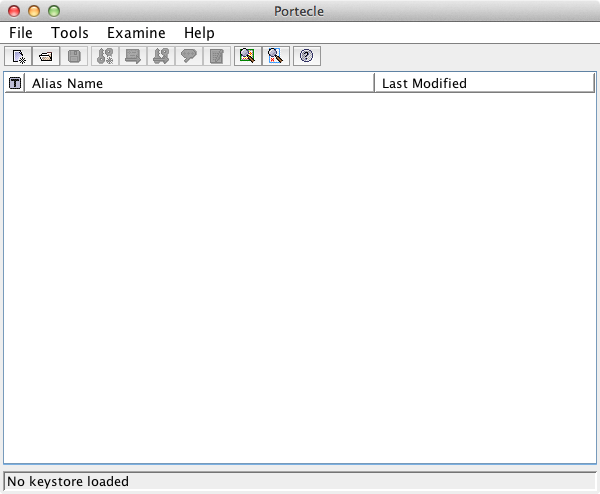Figure 7. Portecle after start -
Firstly create the server Keystore
-
Choose File → New Keystore from the menu and select JKS as Keystore type in the popup window
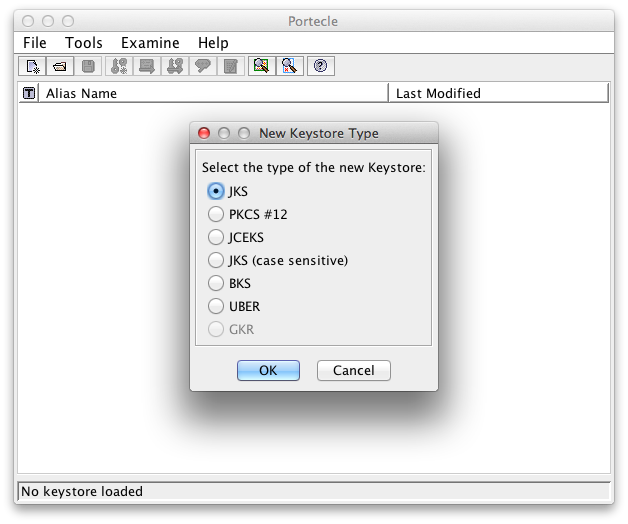Figure 8. Choose Java Keystore -
Create a new Key Pair: Tools → Generate Key Pair
-
Choose a Key Alogrithm and Key Size
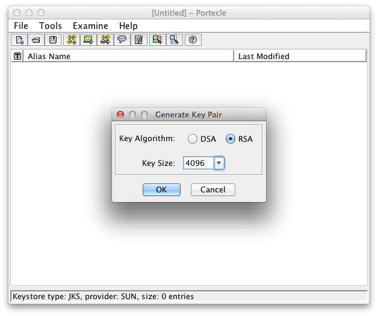Figure 9. Common Key Algorithm and Size -
Enter the Signature Algorithm (recommended is SHA512withRSA) and the Certificate Details
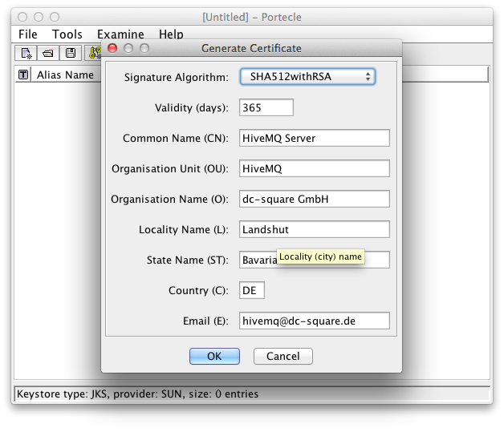Figure 10. Certificate Signature Algorithm and Details -
Choose a Key Pair Entry Alias.
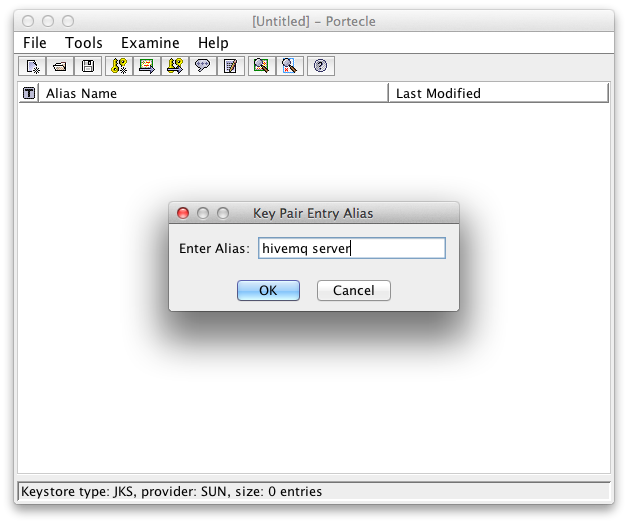Figure 11. An alias for the key pair -
Set a password for the Key Pair Entry
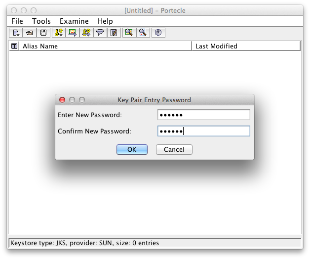Figure 12. A password to protect the private key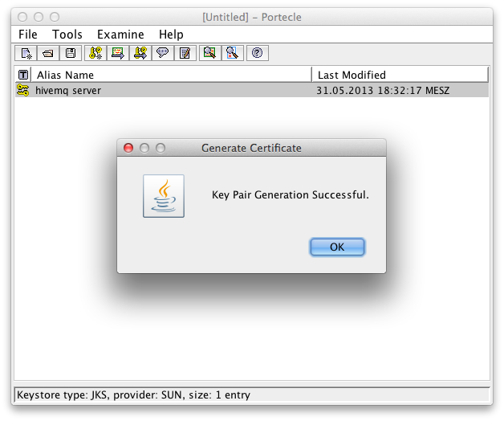Figure 13. Successful Generation of Key Pair -
Save the Keystore: File → Save Keystore As…
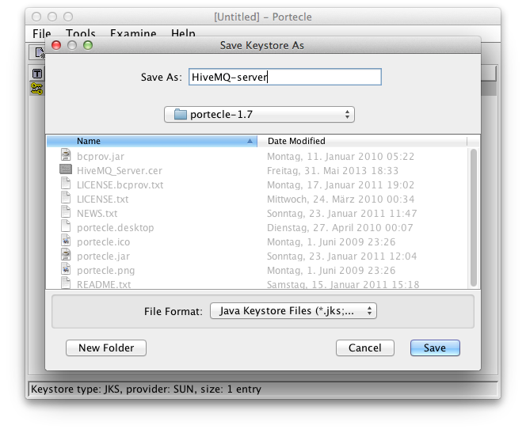Figure 14. Save the Keystore -
Export the certificate for the client: Right Click on the certificate key pair and click Export
-
Select Head Certificate as Export Type and choose an export format (recommended is PEM)
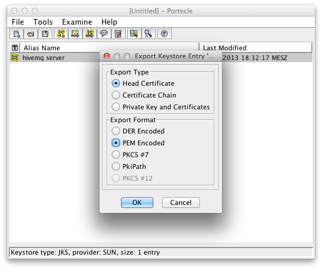Figure 15. Export Details -
Choose directory to save the certificate
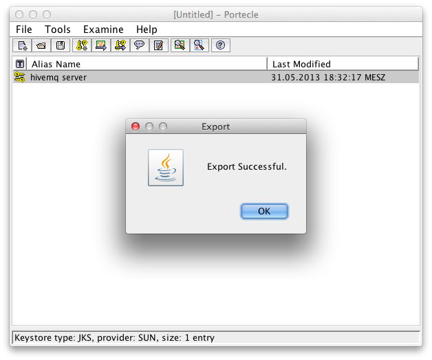Figure 16. Export Successful
-
-
Secondly create the client Keystore
-
Choose File → New Keystore from the menu and also select JKS as Keystore Type
-
Import the just saved certificate via Tools → Import Trusted Certificate
-
Select the previous exported certificate
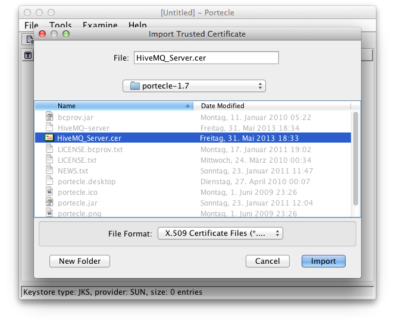Figure 17. Import server head certificate -
Confirm the message that the trust path could not be established. This is because the certificate is self-signed and no certificate chain can verify it.
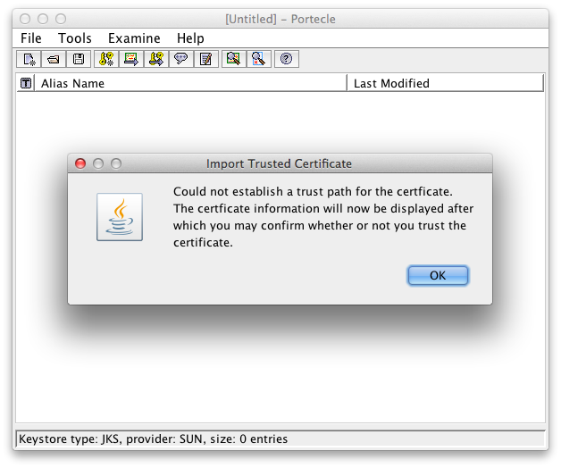Figure 18. Warning because of the self-signed certificate -
Confirm the showed certificate details
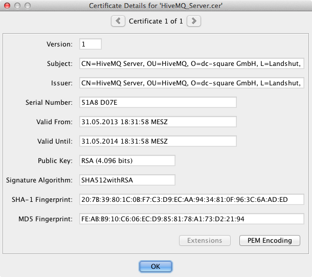Figure 19. Certificate Details -
Trust the certificate with clicking Yes.
Figure 20. Accept to trust our created self-signed certificate for the server -
Enter an alias
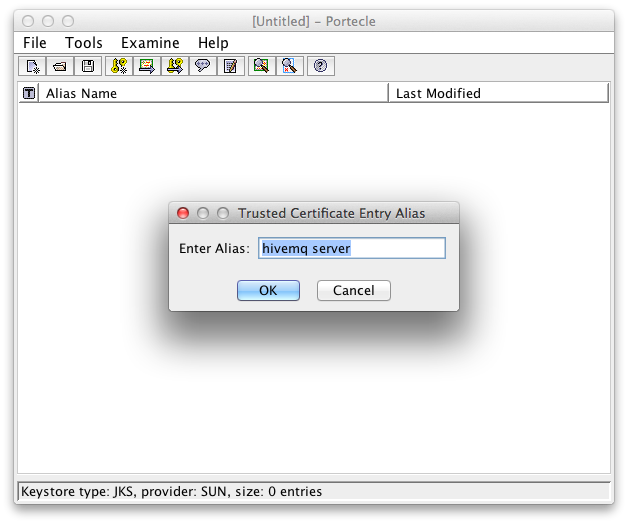Figure 21. Alias for the server certificate in the client keystore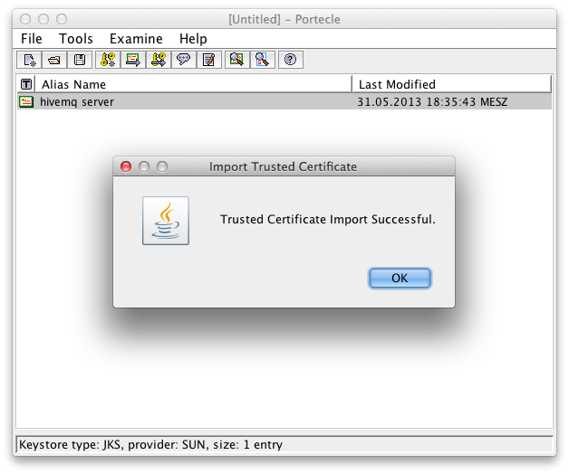Figure 22. Successful import of ther server certificate in the client keystore -
Save the Keystore as client.jks with File → Save Keystore As…
-
-
Place the server.jks in the HiveMQ directory and also create the following configuration and save it as configuration.properties
ssl.enabled=true keystore.location={HIVEMQ_HOME}/server.jks keystore.password=yourSpecifiedPassword -
Use client.jks to connect with a client